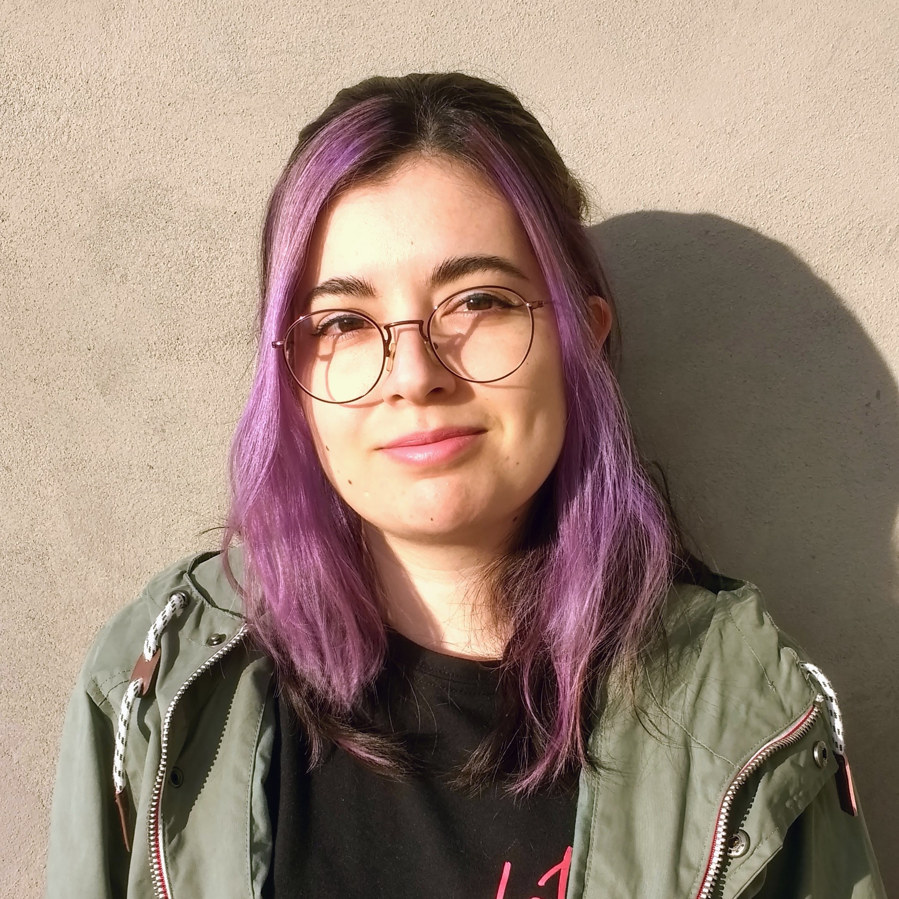

M. Sc. Rocío Jazmín Guzmán-Ojeda
I'm an ecologist and Master in Biological Sciences. My research has been focused on wildlife population ecology. I'm interested in understanding how freshwater invertebrate populations and communities are affected by changes in their ecological interactions. I'm also interested in biological inventories and wildlife conservation. I do science communication in Spanish on Nicho Silvestre. I also make illustrations, including scientific illustrations.Education
- M. Sc. in Biological Sciences. 2020. Biology Institute, National Autonomous University of Mexico (UNAM).
- B. Sc. in Ecology. 2016. Sonora State University (UES). Hermosillo, Sonora, Mexico.